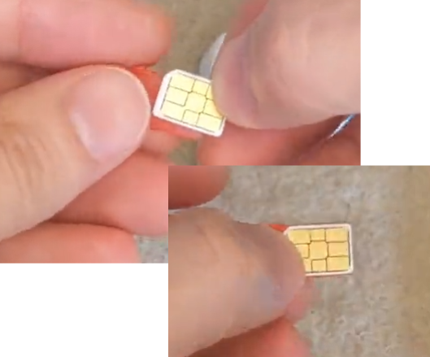
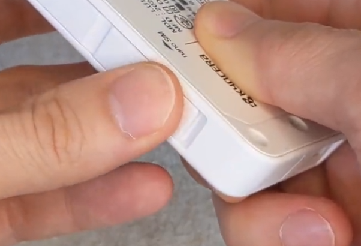
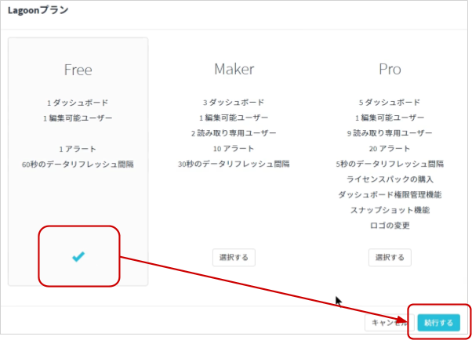
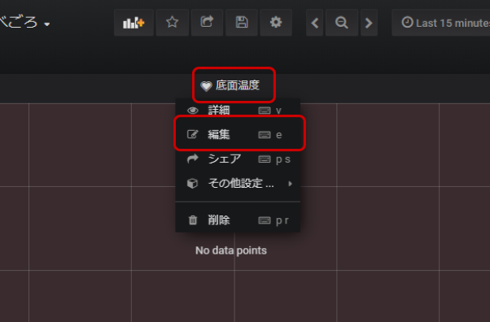
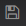

公開日: 2020年7月
レシピ難易度：★☆☆☆☆
アイスクリームの食べ方の一つに「とろけ食べ」という溶け始めを楽しむ方法があります。しかし、溶け始めを待っていると「忘れてしまうという問題」がありますが、本レシピは IoT によって溶け始めを感知し、確実に「溶け始めのアイスクリーム」を楽しめる方法を作ります。
溶かす方法ですが、今回は室温における常温解凍の具合をセンシングします。何度か試したところ、私のところではアイス底面にてセンサーの温度が 18.5℃～17.5℃ を下回ると下図のように周辺が溶けた状態になるため、中心部と混ぜ合わせる事で程よい溶け具合となります。
底面での温度が目標に達するまでには室温状況に左右するため、時間ではなく温度センサーにて計測し、目標に達したら下図のような通知を送る仕組みとなっています。
本レシピに連動した動画も公開しています。
本レシピを行うのに必要な時間、概算費用
本レシピは以下の通りです。
- 必要な時間: 約1時間
- 概算費用: 約11,100円
※ 概算費用: ハードウェアや SORACOM を始めとした各種サービスの概ねの費用 (税や送料などの付帯費用や無料枠適用は考慮しないものとしています)
このコンテンツの進め方
ページの内容を読み、また作業を行ったら右下の［Next］を押して次のステップへ進みます。また、［Back］を使って戻ったり、左のナビゲーションメニューでもページの移動が可能です。
左上の［×］を押してコンテンツを終了することができます。また、ページを開きなおすことで再開できます。ページのアドレスはブラウザの［履歴］メニューを利用してください。
本レシピを行うためには以下のものをご用意ください。
ハードウェア
品名 | 数量 | 価格 | 購入先 | 備考 |
GPSマルチユニットSORACOM Edition（バッテリー内蔵タイプ）スターターキット | 1 | 11,000円 | キットの中には以下のものが含まれています。
| |
パソコン | 1 | ― | ― |
|
(必要な方のみ) USB 型 AC アダプタ | ― | ― | ― | GPS マルチユニット SORACOM Edition の充電に利用します。パソコンからの給電でも代用可能です。 |
※ 金額はレシピ作成時となります。ソラコムで販売している金額は税抜き・送料別です。
その他必要なもの
必要なもの | 費用 | 作成方法など |
SORACOM アカウント | 無料※ |
※ アカウント作成・維持の費用の料金です。
設置に利用したもの
本レシピで設置時に利用した部材です。必須ではありませんがご参考にお使いください。
品名 | 数量 | 備考 |
ティッシュ | 1 | 1枚あれば十分です。GPS マルチユニット SORACOM Editionが濡れないようにするためのカバーとして使います。 |
GPS マルチユニットは SIM を挿入することでセルラー通信(LTE-M)を通じて、クラウドと連携できるようになります。そのため、まず GPS マルチユニットに同梱されている SIM を SORACOM へ登録をしましょう。
※ すでに登録済み、もしくは登録済みの別の SIM を利用する場合は次へお進みください。
登録の方法は発注済みの SIM を登録する(JP)をご覧ください。約5分で完了します。
登録が完了すると SIM 管理の一覧に表示されますので、確認ください。

SORACOM 特定地域向け IoT SIM (以下 SIM) をカードから切り離し、GPS マルチユニットの側面に挿入します。
GPS マルチユニットの側面を開け、SIM トレイ (赤色) を取り出す。
爪で引っ掛けるようにして取り出します。

SIM を SIM トレイに乗せる。
SIM トレイに収まるように SIM を乗せます。SIM の方向に気をつけてください。また、SIM トレイは無くさないようにしてください。

SIM トレイごと GPS マルチユニットに挿入する。
元々入ってた向きで SIM トレイごと SIM を GPS マルチユニットに挿入します。このとき、SIM トレイから SIM が飛び出ないように気をつけてください。
最後に側面を閉じて終了です。

GPS マルチユニットに挿入した SIM の IMSI (クレジットカードサイズのカードの裏面に記載されている 15 桁の番号) を使用しますので、すぐ取り出せるようにしておいてください。
ここでの作業は動画 (約1分) でもご覧いただけます。
GPS マルチユニットの設定は SORACOM ユーザコンソール上で行います。
SORACOM ユーザーコンソールにログインした後［Menu］>［ガジェット管理］>［GPS マルチユニット］とクリックします。

GPS マルチユニット管理画面が表示されます。ここには、GPS マルチユニットとして利用しているSIM一覧が表示されます。初めて利用する場合は「データが見つかりません」と表示されますが、正常です。
［新規デバイス設定］をクリックします。

GPS マルチユニットに挿入した SIM にチェックをつけてから［次へ：グループを選択］をクリックします。
複数 SIM を持っている場合は IMSI で見つけ出すようにしてください。
※図では「名前」を登録してあるため、見つけやすくなっています。

"新規グループを作成" をクリックし、グループ名入力してから［次へ：設定を編集］をクリックします。
グループ名は任意です。日本語も利用可能です。ここでは「GPSマルチユニット」としています。

GPSマルチユニットの設定を行います。
送信内容
「温度」のみにチェックがついているようにします。(位置情報、湿度のチェックは外します)
送信先
「SORACOM Harvest (Lagoon)」 にチェックをつけます。

送信モード
「定期送信 ― 手動モード」にチェックをつけます。

定期送信 ― 手動モード 詳細設定
送信間隔を 1 と入力します。

ここまで入力が完了したら、最後に［保存］をクリックします。
すると以下のダイアログが表示されるので［デバイス一覧に戻る］をクリックします。
GPS マルチユニット管理画面に戻りますが、先ほど設定した SIM が一覧に表示されていることが確認できます。

設定を GPS マルチユニット本体に反映させる。
GPS マルチユニットのファンクションボタン（本体表面の四角のボタン）を1秒ほど押します。すると LED が緑色に点灯します。
GPS マルチユニット本体から SORACOM に保存されている設定情報を取得して設定が反映されます。また、設定が反映された GPS マルチユニットは新たな設定で動き続けるようになります。
以上で GPS マルチユニットの設定は終了となります。
SORACOM Harvest Data を利用して、設定が正しく反映されているか確認します。
GPS マルチユニット管理画面で、先ほど設定したSIMにチェックを付けて［データを確認］をクリックします。

以下のようにグラフが確認できます。SORACOM Harvest Data の操作として、画面左側のグラフ種類を選んだり、画面中央の「自動更新」で自動的に新たなデータを表示できます。
「temp(温度)」「rs(電波強度)」「bat(電池残量)」「type(送信モード)」の 4つの値が1分間隔で送信されていれば、設定成功です。
SORACOM Harvest Data に蓄積されたデータを SORACOM Lagoon で活用していきます。
SORACOM Lagoon 用語解説
ここで SORACOM Lagoon で使われる用語を解説します。
用語 | 意味 |
プラン | SORACOM Lagoon の契約プランです。機能と料金が異なります。SORACOM Lagoon のご利用料金に機能や料金の比較表があります。 |
メトリクス (メトリック) | データが格納されている先です。SORACOM Lagoon では以下の4つの中から選び、その中からノード(SIMや回線)を選択します。
|
データソース | メトリクスの参照先です。SORACOM Lagoon では "Harvest" (= SORACOM Harvest) を選ぶとメトリクスが展開されます。 Grafana ではテスト用のランダムデータが表示されます。 |
パネル | パネルはデータを表示する領域です。データソースとメトリクスを指定すると、そのメトリクス(たとえばSIM)のデータをパネルで使えるようになります。 様々なパネルが存在します。 |
ダッシュボード | 複数のパネルを束ねて「1枚の画面」にしたものがダッシュボードです。共有の単位となります。 |
SORACOM Lagoon ユーザー (Lagoon ユーザー) | SORACOM Lagoon へログインするためのユーザー(IDとパスワードの組) SORACOM ユーザコンソールへのログインとは異なるユーザ一覧となり、皆さん自身で登録・削除が可能です。ダッシュボードやパネルを編集できる「編集可能」と表示専用の「読み取り」の2段階の権限を設定できます。 作成可能数はプランによります。 |
データリフレッシュ | SORACOM Harvest から SORACOM Lagoon へデータが反映される事、もしくは反映タイミングとなります。反映タイミングはプランによります。 |
アラート | メトリクスのデータに対して条件を設定し、その条件を満たしたら通知を行う仕組みの事です。 |
SORACOM ユーザーコンソールの［Menu］>［データ収集・蓄積・可視化］>［SORACOM Lagoon］とクリックします。

［SORACOM Lagoon の利用を開始する］をクリックします。

プランのうち［Free］を選択したあと［続行する］をクリックします。

SORACOM Lagoon ユーザーの初期ユーザーに設定するパスワードを入力した後、［利用開始］をクリックします。

SORACOM Lagoon の有効化に成功すると、以下のように SORACOM Lagoon コンソールへのリンクと、Lagoon ユーザーの一覧が管理できるようになります。
この画面を SORACOM Lagoon 管理画面と呼びます。
SORACOM Lagoon 管理画面は、SORACOM Lagoon が有効化されている間は ［Menu］>［データ収集・蓄積・可視化］>［SORACOM Lagoon］で表示する事ができます。
SORACOM Lagoon 管理画面を表示したあと、［SORACOM Lagoon console にアクセス］をクリックします。
※ SORACOM Lagoon 管理画面は ［Menu］>［データ収集・蓄積・可視化］>［SORACOM Lagoon］で表示する事ができます。
SORACOM Lagoon へログインします。
メールアドレス (SORACOM ユーザコンソールへログインする際のメールアドレス) と、SORACOM Lagoon 初期ユーザ作成時に利用したパスワードでログインします。

ログインに成功すると、以下のような画面が表示されます。これが SORACOM Lagoon ログイン直後の画面です。ここから「ダッシュボード」や「パネル」を作成していきます。

通知先を設定します。
アラートアイコンにカーソルを乗せると表示される「アラート」メニューから［通知チャンネル］をクリックします。
［チャンネルを作成］をクリックします。

「Alerting」では以下の通りに入力します。
項目 | 内容 | 備考 |
名前 |
| 任意の名称で構いません。 |
タイプ | ― | |
Email addresses | 通知の送付先メールアドレス | ; で複数指定が可能です。 |

入力し終わったら［保存］をクリックします。
以下のように表示されていれば成功です。
あらかじめ設定が済んでいるテンプレートを使ってダッシュボードを作成します。
ダッシュボードアイコン にカーソルを乗せると表示される「ダッシュボード」メニューから［管理］をクリックします。
にカーソルを乗せると表示される「ダッシュボード」メニューから［管理］をクリックします。

［Import］をクリックします。

［Or paste JSON］のテキストボックスへ、以下のテキストを入力(貼り付け)ます。
貼り付けたら［Load］をクリックします。
貼り付けるテキスト (JSON)
{
"annotations": {
"list": [
{
"builtIn": 1,
"datasource": "-- Grafana --",
"enable": true,
"hide": true,
"iconColor": "rgba(0, 211, 255, 1)",
"name": "Annotations & Alerts",
"type": "dashboard"
}
]
},
"editable": true,
"gnetId": null,
"graphTooltip": 0,
"id": 2050,
"links": [],
"panels": [
{
"alert": {
"conditions": [
{
"evaluator": {
"params": [
17.5
],
"type": "lt"
},
"operator": {
"type": "and"
},
"query": {
"params": [
"A",
"5m",
"now"
]
},
"reducer": {
"params": [],
"type": "last"
},
"type": "query"
}
],
"executionErrorState": "alerting",
"frequency": "60s",
"handler": 1,
"message": "アイスが食べごろかもしれません！",
"name": "Panel Title alert",
"noDataState": "no_data",
"notifications": [
{
"id": 747
}
]
},
"aliasColors": {},
"bars": false,
"dashLength": 10,
"dashes": false,
"datasource": null,
"fill": 1,
"gridPos": {
"h": 12,
"w": 24,
"x": 0,
"y": 0
},
"id": 2,
"legend": {
"avg": false,
"current": false,
"max": false,
"min": false,
"show": true,
"total": false,
"values": false
},
"lines": true,
"linewidth": 1,
"links": [],
"nullPointMode": "null",
"percentage": false,
"pointradius": 5,
"points": false,
"renderer": "flot",
"seriesOverrides": [],
"spaceLength": 10,
"stack": false,
"steppedLine": false,
"targets": [
],
"thresholds": [
{
"colorMode": "critical",
"fill": true,
"line": true,
"op": "lt",
"value": 17.5
}
],
"timeFrom": null,
"timeShift": null,
"title": "底面温度",
"tooltip": {
"shared": true,
"sort": 0,
"value_type": "individual"
},
"type": "graph",
"xaxis": {
"buckets": null,
"mode": "time",
"name": null,
"show": true,
"values": []
},
"yaxes": [
{
"format": "short",
"label": null,
"logBase": 1,
"max": null,
"min": null,
"show": true
},
{
"format": "short",
"label": null,
"logBase": 1,
"max": null,
"min": null,
"show": true
}
],
"yaxis": {
"align": false,
"alignLevel": null
}
}
],
"refresh": "1m",
"schemaVersion": 16,
"style": "light",
"tags": [],
"templating": {
"list": []
},
"time": {
"from": "now-15m",
"to": "now"
},
"timepicker": {
"refresh_intervals": [
"1m",
"5m",
"15m",
"30m",
"1h",
"2h",
"1d"
],
"time_options": [
"5m",
"15m",
"1h",
"6h",
"12h",
"24h",
"2d",
"7d",
"30d"
]
},
"timezone": "",
"title": "アイスクリームの食べごろ"
}
Options では以下のようになっていることを確認します。
項目 | 内容 |
Name | アイスクリームの食べごろ |
フォルダ | General |
Unique Identifier (uid) | auto generated |
確認できたら［Import］をクリックします。
以下のように表示されていれば成功です。
"底面温度" >［編集］をクリックします。

"メトリック" タブでノード(= SIM) をクリックし、GPS マルチユニットに紐づいている SIM を選びます。
データソースを "default" にした後、［クエリを追加］をクリックします。
メトリクスは "Air" になっているので、あとはノード(= SIM) で GPS マルチユニット SORACOM Edition に取り付けた SIM を選択します。
選んだ時点で、全データが表示されます。
表示データを "temp" のみにします。
データの項目リストをクリックして "temp" をクリックします。

選ぶと、即時グラフに反映されます。
"アラート" タブをクリックした後［通知］をクリックします。
［送り先］の をクリックし、先ほど作成した通知先 (例に沿っているなら email)を選択します。
をクリックし、先ほど作成した通知先 (例に沿っているなら email)を選択します。
以上で全ての設定が終了です。
画面右上のダッシュボードに戻る ボタンをクリックします。
ボタンをクリックします。

画面右上のをクリックすることでこれまでの作業を保存できます。

［保存］で保存します。
準備が整いましたので、実際にアイスクリームの底面温度を計測します。
緑色の枠が温湿度センサーの窓になっています。ここにアイスクリームの底面が当たるように乗せる事になります。
水分対策としてティッシュペーパーで覆いました。
以下が実際にアイスクリームを乗せている様子です。今回利用したアイスクリームは小さめという事もあり、縁を回避するような形で底面がセンサー部に密着できるようずらしています。
SORACOM Lagoon で可視化＆通知
実際の様子を見てみます。以下のように乗せた後から温度が下がり始めている様子が可視化されます。
また、設定温度である 17.5 ℃ を下回ると画面上でもアラートを見ることができます。
この時メールにも以下のように届いていることが確認できます。
私の環境では以下のように食べごろとなりました。
本レシピでは費用がかかるサービスを利用しています。
本項をよく読み、必要な操作や解除作業を行うようにして、想定外の費用が掛からないようにしてください。
費用について
ここで記載している金額は全て税別、送料別となります。
SORACOM プラットフォームの利用料金
サービス／機能 | 料金 |
(今回の利用であれば 1MB 以内で収まる範囲) | |
| |
今回は Free プラン(無料)を使用しました。 |
※ 費用詳細はリンク先をご確認ください。
グループ解除
SORACOM Harvest Data 等、「機能が有効になっているグループに所属している SIM × 費用」となっているサービスにおいては、「機能を OFF にする」することで費用の発生を抑えることができます。またもう1つの方法として「グループに所属している SIM の数を減らす(= 解除する)」事でも費用を抑える事ができます。
グループ解除の方法はグループからの解除 (JP)をご覧ください。
SORACOM Harvest Data のデータ削除
SORACOM Harvest Data は基本的にはデータ保管料は無料※です。そのため、保存しておいても害はありませんが、デモ等で利用する際にはデータを綺麗にしておく必要が出てくるため、データ削除について解説します。
※発生から40日を超えたデータは削除されます。40日以上データを保管したい場合はデータ保持期間延長オプション利用料金をご利用ください。
SORACOM Harvest Data 画面 (［操作］>［データを確認］) のデータテーブルで、削除したいデータのチェックボックスを付けた後に［削除］をクリックします。表示されたダイアログで改めて［削除］をクリックすると、削除されます。
※ 複数のデータにチェックをつければ一括で削除可能です。

データの復元はできませんのでご注意ください。
SORACOM Lagoon の解約
SORACOM Lagoon はオンラインで解約が可能です。 Free プランであれば有効化しておいても費用は発生しませんが、長期に渡って利用しない場合には解約も選択いただけます。
解約の方法はSORACOM Lagoon の解約(JP)をご覧ください。
本レシピでは、センサーや電源の事を考えなくとも利用可能なデバイスで、「簡単に現場のデジタル化」を実現しました。SORACOM Lagoon を活用すれば、アプリケーション開発の手間も減らすことができるため、「IoT の全体像を知りたい」といった方にも向いているかと思います。
よくあるご質問はLet's try IoT プロトタイピング ～ 健康管理や肌の乾燥を防ぐ仕組みを作ろう 〜 動画とQAのご紹介でご案内しています。こちらもご覧ください。